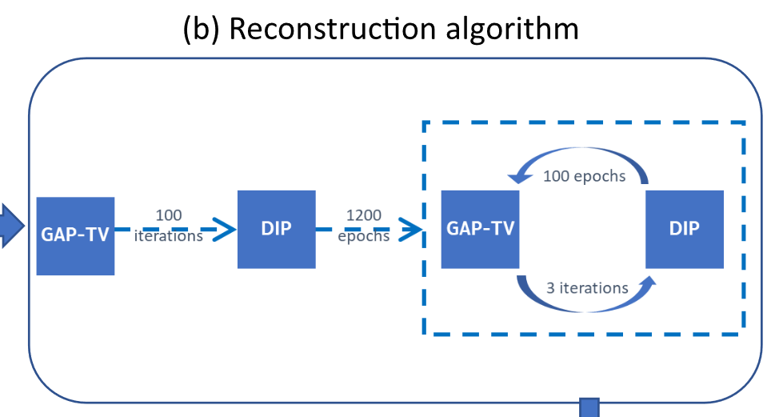
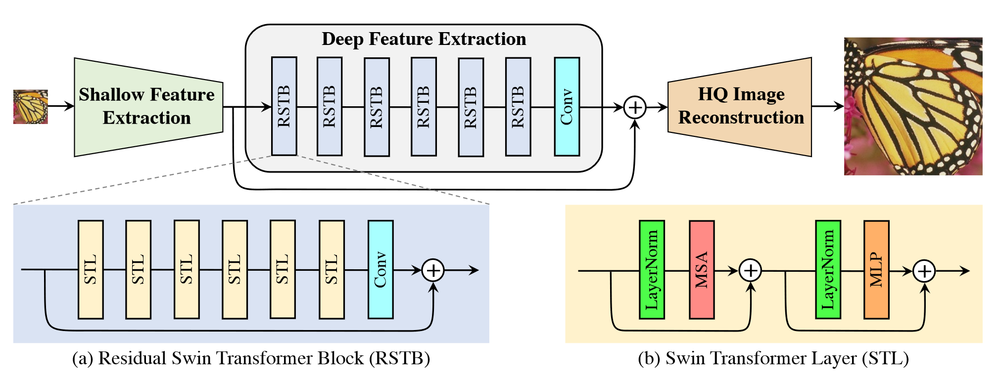

开个文档push自己读文章……
综合#
Snapshot Compressive Imaging: Theory, Algorithms, and Applications
- 首次阅读时间：2023.2.9-2023.2.10
- 主要内容：系统性回顾了2021年之前的快照压缩成像的硬件系统、数学模型、理论、算法
- 详细笔记：TBA
成像系统#
To Be Add
算法#
综述#
Recent advances of deep learning for spectral snapshot compressive imaging
-
首次阅读时间：2023.2.11
-
主要内容：回顾了2023年之前的光谱快照压缩成像算法（基于deep learning）
-
重点
- 深度先验+PnP是值得关注的方向
- Transformer在光谱快照压缩成像中开始发挥其优势
End2End#
Mask-Guided Spectral-Wise Transformer for Efficient Hyperspectral Image Reconstruction
-
首次阅读时间：2023.2.14
-
创新点：
- 首次将Transformer用于光谱SCI
- 光谱注意力机制（S-MSA，将各波长的二维图拉伸得到的向量看作token）
- 掩膜引导机制（使得S-MSA模块关注具有光谱图像中高保真度的区域）

Coarse-to-Fine Sparse Transformer for Hyperspectral Image Reconstruction
-
首次阅读时间：2023.2.27
-
创新点：
- SASM（光谱感知筛选机制，a图）：让模型关注信息丰富的区域（轻微降低性能但大大提高计算效率）
- SAH-MSA（光谱聚合散列自注意力机制，c图）：通过hashing，把每个patch中强相关的token归为一组，在组内进行self-attention。
-
首次阅读时间：2023.4.1
-
创新点：
- 提出了通过measurement和mask生成每一帧的平均测量值
和每一帧的初始值的预处理方法 - 提出了AttRes-CNN，用于重建第一帧
- 提出了双向RNN网络用于重建其余帧
- 结合MSE Loss和对抗性训练
- 提出了通过measurement和mask生成每一帧的平均测量值
Deep unfolding#
Degradation-Aware Unfolding Half-Shuffle Transformer for Spectral Compressive Imaging
-
首次阅读时间：2023.3.1
-
创新点：
-
第一个基于Transformer的深度展开方法-DAUHST（2022.5）
-
提出DAUF，从压缩图像和物理掩码中估计参数，然后使用这些参数来控制每次迭代，开始从退化模型指导迭代
-
提出Half-Shuffle Transformer (HST)，它可以同时捕获本地内容和远程依赖项，克服了CNN或local Transformer（捕获远程依赖有局限）以及global Transformer的缺陷（计算成本高）

-
PnP#
Plug-and-Play Algorithms for Large-Scale Snapshot Compressive Imaging
- 首次阅读时间：忘了……
- 创新点：将深度去噪网络FFDNet集成到PnP-GAP中，具有较低计算量，并且首次表明 PnP 可以从二维快照测量中恢复 FHD 彩色视频（3840 × 1644 × 48，PNSR 高于 30dB）。
Deep plug-and-play priors for spectral snapshot compressive imaging
- 首次阅读时间：忘了……
- 创新点：
- 首次提出PnP方法重建高光谱图像
- 考虑到光谱特性，重建每一帧时用与其相邻的帧进行重建，并且传入noise map调控去噪强度
Untrained NN#
- 首次阅读时间：2023.2.11
- 创新点：用未经训练的网络作为先验，可用于去噪、超分辨等一系列任务
Snapshot temporal compressive microscopy using an iterative algorithm with untrained neural networks
-
首次阅读时间：2023.2.12
-
创新点：GAP-TV + deep image prior混合优化，用于视频SCI。也是首次将DIP用于SCI（2021年2月前没有将DIP用于SCI）。

Self-Supervised Neural Networks for Spectral Snapshot Compressive Imaging
- 首次阅读时间：2023.2.12
- 创新点：提出PnP-DIP/PnP-DIP-HSI算法，使用ADMM（+HSI先验）+DIP，将DIP集成到PnP中进行混合优化，用于光谱SCI。
- 首次阅读时间：2023.2.13
- 创新点：互补编码+UNN解码，用于视频SCI。互补编码和UNN也许是“天生一对”，那么或许也会有有别的编码方式和别的算法是“天作之合”
-
首次阅读时间：2023.2.28
-
创新点：用Swin Transformer进行图像修复、超分辨等。流程：浅层信息提取+深层信息提取+重建

作者: 核子